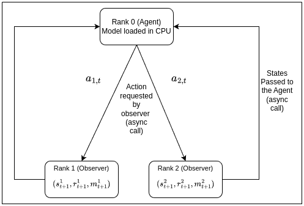
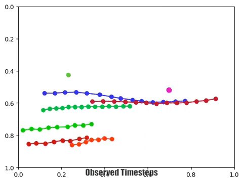

Selected Academic Projects

Distributed Advantage Actor Critic (DAAC)
[Project Website]- Developed a distributed approach facilitating model training across multiple nodes in a topology by providing mechanisms for remote communication using RPC.
- Enhanced data collection by leveraging A3C and PAAC networks to gather experiences from a distributed cluster, achieving a 1.5X speedup over the serial counterpart.

Deep Learning for Social Navigation and Behaviour Modelling
[Project Website]- Implemented diverse algorithms for predicting future trajectories, aiming to comprehend animal and human behaviour.
- Modelled 3 distinct graphs to establish spatio-temporal interactions among mice and setup clusters for parallel training.
- Designed a novel geodesic loss to preserve anatomical constraints and demonstrated a 12% improved prediction.


Pose prediction using Temporal Convolutions
[Project Website]- Investigated sequential models for human pose prediction on AMASS ACCAD dataset with SO(3) representation.
- Developed Temporal Convolutions (TCN) that surpassed Vanilla Transformer by 53% with < 50% parameters.
- Built TCGAN to generate multiple input-conditioned poses and achieved an improvement of 56% over Transformer.

Painting with Serial Robotic Arm
- Programmed a Universal Robot (UR5) to paint an outline of an object using visual cues from an image in real time.
- Performed Forward and Reverse displacement analysis using the DH parameters and simulated robot motion using waypoint generation techniques in MATLAB and Gazebo.

Autonomous Mobile Robot
- Programmed Turtlebot3 via state machines to classify signs and avoid obstacles by fusing LiDAR, Pi-Cam, and odometry.
- Employed ROS2 Nav-Stack and implemented HectorSLAM for autonomous navigation in the maze environment.
- Analyzed incoming stream of images using Canny Edge Detector and KNN classifier with an accuracy of 90%.
Hackathons
Winner, Mega Chess SF Hackathon 2024 - Strong Compute
[Website]Led a team of two to develop a vision-based deep learning chess model using a combined self attention and convolutional approach.
Built and trained the model on Strong Compute's clusters, achieving top performance in evaluations conducted by the Stockfish chess engine among teams from USA and Australia.